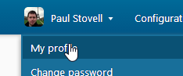
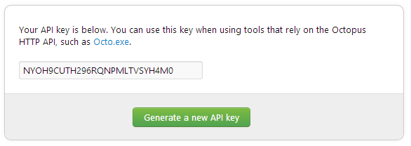

Automating Deployment using FAKE and Octopus Deploy
Octopus Deploy is a great tool for simple and user-friendly release management.
Installing Octopus Deploy
You can download the free community edition of Octopus Deploy from http://octopusdeploy.com/downloads - and then follow the Installation Instructions to get yourself up and running.
You will also need to install and configure at least one Tentacle which you will deploy your software and services to.
Octopus Deploy HTTP API and Octopus Tools
Octopus Deploy has a REST-style HTTP API available at http://your-octopus-server/api which we will be using via the Octopus Tools, controlled from a FAKE script.
You should add the OctopusTools NuGet package to your solution, which you can also resolve from a FAKE script - which you will need in order to use the OctoTools from a FAKE script.
Generate an API Key
In order to communicate with the Octopus Deploy API you will need an API key to authenticate with.
It is a good idea to create an account in Octopus Deploy for your Continuous Integration systems (eg: TeamCity) - and then generate a new API key for that account, that can be safely used from within your build process.


Create a Release
Octopus Deploy relies on the concept of a release, which should be an immutable NuGet Package which has been built, tested, packaged and published from your Continuous Integration systems - which you can of course completely manage with your FAKE script.
So once you have created a project you are able to create and push a release into Octopus Deploy. This can be done through the Octopus UI, command line tool, or in our case - from a FAKE script.
1: 2: 3: 4: 5: 6: 7: 8: 9: 10: 11: 12: 13: |
|
In this instance both the releaseOptions and octoParams contain assumed default values that will fail by default. CreateRelease allows you to also deploy the release at the same time, but since we're not interested in doing this at this moment - we'll set our deployOptions to None.
Deploy a Release
You can automatically deploy a release when you create it, but using the optional deploy options when you create your release.
This is often a good idea when you want your FAKE build script to continue on to a second set of perhaps slower, unit tests that exercise behaviours in a more complete and perhaps integrated environment.
1: 2: 3: 4: 5: 6: 7: 8: 9: 10: 11: 12: 13: 14: |
|
In this instance we've used the default deployOptions and modified the environment that we're going to deploy to - this is then passed into the CreateRelease.
Promote a Release
Finally when you are absolutely happy that your release is good to go the next stage (be that some manual or exploratory testing, or perhaps a staging environment). We can use a DeployRelease command to promote an existing release to the next environment:
1: 2: 3: 4: 5: 6: 7: 8: 9: 10: 11: 12: 13: 14: 15: |
|